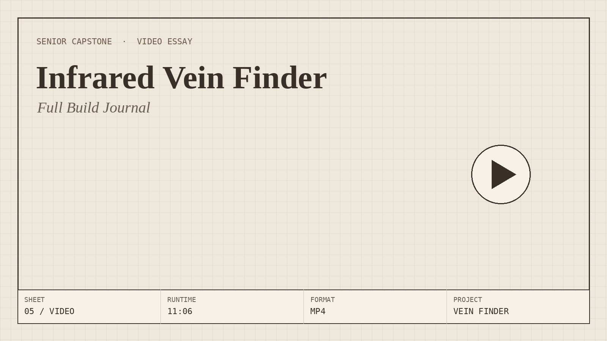

Growing up with a father in the biotech industry, medical machinery and software were not unfamiliar to me. He used to bring me back small souvenirs from his around-the-world meetings with companies, like an anatomical heart squishy toy, a random company name ballpoint pen, or a lanyard here and there. Over time, he taught me about the breadth of the field, explaining to me all the different companies he would encounter, albeit they were mostly software companies. Although I liked his biotech software stories, I figured out my own specialized interest within the field through internships during my summer breaks. The summer after grade 10 I worked at a local company that crafted handheld Bluetooth ultrasound devices, working with Verification & Validation engineers. I really loved the hands-on building aspect the most, although I was fortunate enough to experience the software and code that corresponded to the machines. I did another internship the following summer at a much more software-based company in the south of France, where I got to experience the more academia side of biomedical technology: writing research papers, attending PhD presentations and such. It was intriguing, but if anything it solidified my interest in purely mechanical, physical machines. From there I chose to head down the path of biomechanics, which is where the inspiration for this project came from. In the fall I'll be heading off to university to pursue a degree in biomedical engineering with a concentration in biomedical mechanics and mechanobiology. With this education, and within this project, I hope to address issues within the medical field and work on technology to aid in improving diagnostic accuracy, enhancing patient outcomes, and making healthcare more accessible and efficient for all.
The problem I hope to address throughout my senior capstone project is vein finding in people undergoing routine procedures like blood draws, where it's common for practitioners to miss the vein multiple times, causing unnecessary discomfort and frustration. A 2013 study on 135 hospitalized patients with complex health conditions found that 59.3% experienced difficult venous access (DVA). Being female was the only independent risk factor, with women nearly three times more likely to have DVA (Armenteros-Yeguas et al., 2017). This capstone will attempt to tackle this issue through a machine that enhances vein-finding in order to prevent patients with complex health issues from experiencing unnecessary pain and procedural delays in the current-day medical field. With that being said my research question is as follows:
How can biotechnology be utilized to enhance the experience of patients undergoing blood drawing procedure by limiting the amount of failed vein-finding attempts and time required to successfully locate and access a vein?
Although vein finding devices have already been invented, namely by Herbert Zeman in 1995, this project will attempt to tackle an at-home prototype for the purpose of exploring medical devices that solve problems and increase efficiency in healthcare (Vyas et al., 2021). Building any medical device from scratch comes with challenges. Understanding these machines and how they work is complicated enough, meanwhile engineering them is another level of complexity. However, I believe that with enough research (and enough YouTube tutorials) it can be done. Infrared vein finders are also a more simple medical device: I won't have to code anything, there are many available resources, and half the work is done by the magic of infrared light. I can source most parts from Amazon and Home Depot, and fortunately I have two parents with bachelor's degrees in engineering who may be able to offer a helping hand if needed. If necessary, AI may be used as a tool to assist in research, part-sourcing, and consultation. Altogether, this project will be valuable as I journey into university to build more machines like vein finders on my own. As I pursue this field, this capstone serves as a meaningful step toward the kind of real-world medical innovation I hope to contribute to in the future.
Armenteros-Yeguas, V., Gárate-Echenique, L., Tomás-López, M. A., Cristóbal-Domínguez, E.,
Moreno-de Gusmão, B., Miranda-Serrano, E., & Moraza-Dulanto, M. I. (2017). Prevalence of
difficult venous access and associated risk factors in highly complex hospitalised
patients. Journal of Clinical Nursing, 26(23-24), 4267 to 4275.
Vyas, V., Sharma, A., Goyal, S., & Kothari, N. (2021). Infrared vein visualization
devices for ease of intravenous access in children: hope versus hype. Anaesthesiology
Intensive Therapy, 53(1), 69 to 78.
Three angles of the assembly. To add or remove an angle, edit the
caseAngles list in the <script> at the bottom of this page, and the row
above updates automatically.
The full build journal, from early prototyping through final testing. Hosted as an unlisted YouTube video, not searchable or listed on the channel, but playable right here.

No photos here yet. Once you take some final build photos, drop them into
assets/img/vein-finder/construction/ and add the filenames to the
constructionPhotos list at the bottom of this page.